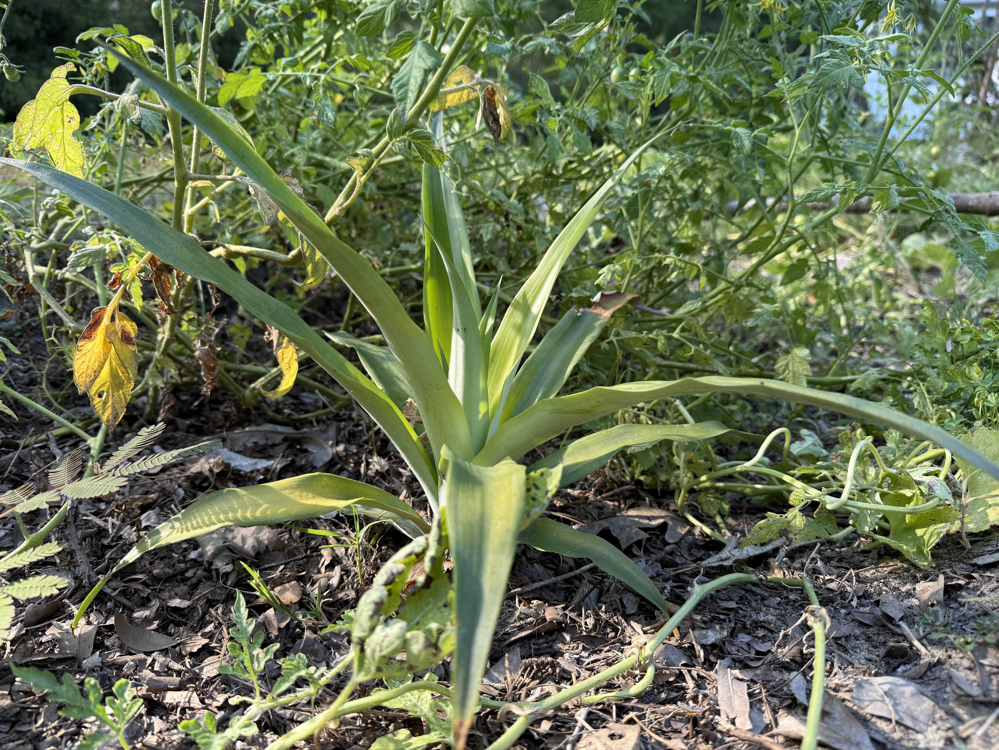
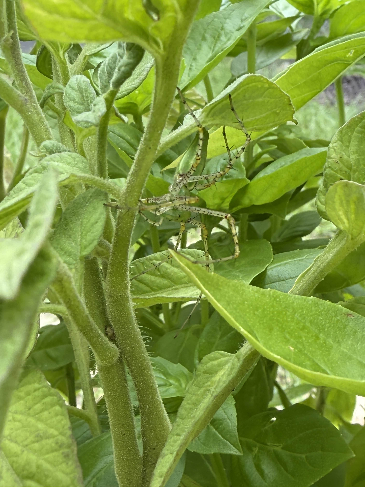
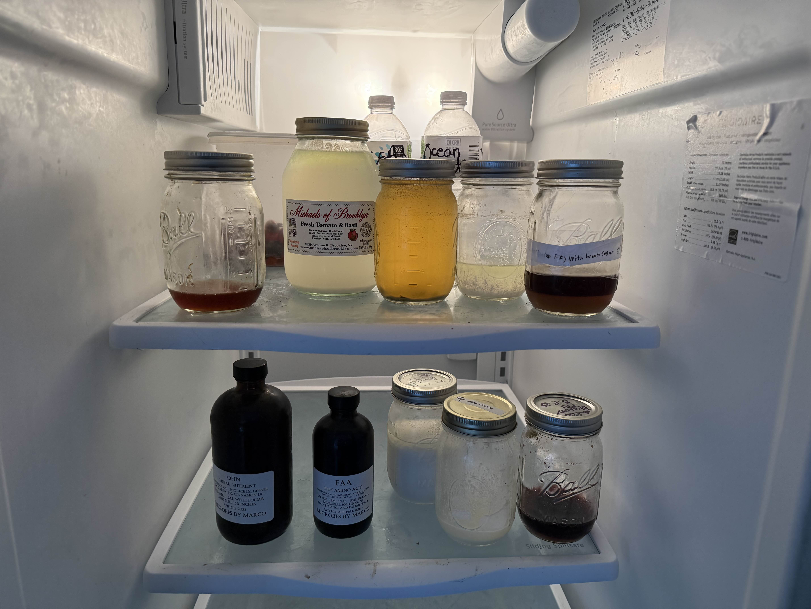

Understanding the Foundation of Healthy Soil


Soil health is one of the biggest factor in having a thriving farm. all sorts of Micobiology live under the soil and create what we call the Soil Food Web, these microbes trade and excavate nutrients from the soil layers in return, they are given sugars produced from plants undergoing photosynthesis. They essentially create a network providing things that the others cant produce. when the soil food web is balanaced and full of bacteria and fungi which both are important, plants grow in perfect conditions. less stress on the plant means less pest damage, and less maintance of the plant itself because the soil and its biology do almost all the work. Microbiology, water, sunlight, and C02 are the biggest factors when it comes to soil health.
Click here to learn more about Soil health


Nutrients are what plants need to grow, but it’s not just about dumping fertilizer on the ground. In the soil, biology breaks down organic matter and turn it into plant avaiable nutrients. relying only on chemical and syntheic fertilzers, the balance of the soil get disrupted, the chemicals kill bacteria and fungi in the soil. soil compaction can stop the chemical fertlizers from being broken down leaving them to just stay in the soil. Keeping the nutrients cycling naturally is better for the soil and the food it grows. The main use of nutrients is actually to feed the microbiology in the soil because they do all work.
Click here to learn more about Nutrients.
I feel Composting can get a bad rep, most people complain how it smells, is hard to manage, and is very complicated to successfully compost organic matter. But as long as you keep a few ideas in mind its actually one of the easiest and cheapest ways to add more beneficial bacteria and nutrients to your soil. Simply get a roughly 50 50 split of Carbon material like leaf litter, or preferabally grass or hay as they tend to break down faster and finer than leaves, or really anything decaying and brown. Then you need an equal mix of green nitrogen materials which could be anything from lawn clippings, food scraps of any kind, leaves from trimmed bushes, and even weeds growing around your property.
Click here to learn more about composting methods.